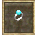
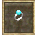
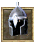
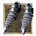
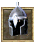
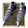
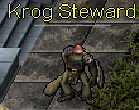
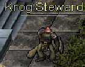

Darkwoods
- 1.
- 2.
- 3.
- 4.
- 5.
- 6.
- 7.
- 8.
- 9.
- 10.
- 11.
- 12.
- 13.
- 14.
- 15.
Whisperdale Quest
Knight of Whisperdale
| Difficulty | Skills |
|---|---|
| Apprentice | Combat |
| NPC Quest Start | Monster | Reward |
|---|---|---|
| Lord Vezryl | Many different creatures |
 ">
">

 ">
">
">
">


|
 Speak to Targon he will not speak to those not aligned with Krog. You must speak with the Krog Steward. He is located next to the spawn gate.  He asks if you will join Krog and help protect the city. If you join Krog
you will be stronger with 1 extra orb of Strength. You will be able to reach 101. Once you make this choice you cannot change your mind. If you chose Krog you will be rewarded.
Speak to Targon he will not speak to those not aligned with Krog. You must speak with the Krog Steward. He is located next to the spawn gate.  He asks if you will join Krog and help protect the city. If you join Krog
you will be stronger with 1 extra orb of Strength. You will be able to reach 101. Once you make this choice you cannot change your mind. If you chose Krog you will be rewarded.
- You have gained the strength of Krog
- You have gained 500 faction with the city of Krog
- 3,609 Experience Pool experience may very
QUEST RECEIVED: Warrior of Krog, Lord Targon of Krog asks you to slay x amount of Creatures.
Speak to Targon, he now calls you a loyal servant of Krog. He needs brave warriors willing to seek out and slay the foul creatures that plague us. He ask if you are willing to help. If you accept his request he will ask you to slay different amounts and types of creatues for him.
His rewards are experience points and Faction points. His quest are repeatable to gain more experiance and Faction points for the city. When slaying the creatures you will be updated QUEST UPDATE: Kill X more Creature for Lord Targon of Krog. When you have slain all of the creatures required
you will be updated.
QUEST RECEIVED: Warrior of Krog, Return to Lord Targon in Krog!
Targon praises you for you a job well done.
You have gained faction with Krog for your heroic work! See Lady Targon of Maraket about a reward.
- You have gained X amount of faction with the city of Krog
- Ramdon Amounts Experience Pool experience may very
 Follow the path south to Maraket and Speak to Lady Targon in the bank. She will greet you and reward you for you loyal patronage. Your reward are pieces of the Krog Armor. You will recieve a new pieces at diffent stages of your faction points.
Follow the path south to Maraket and Speak to Lady Targon in the bank. She will greet you and reward you for you loyal patronage. Your reward are pieces of the Krog Armor. You will recieve a new pieces at diffent stages of your faction points.
- 500 Faction Points Necklace of Krog
- 800 Faction Points Ring of Krog
- 1300 Faction Points Gloves of Krog
- 1800 Faction Points Belt of Krog
- 2300 Faction Points Helm of Krog
- 2800 Faction Points Boots of Krog
- 3300 Faction Points Cloak of Krog
- 3800 Faction Points Guardian of Krog
- 4300 Faction Points Leggings of Krog
- 4800 Faction Points Armor of Krog
Quest Complete
A Shadow Roams the Lands
| Difficulty | Skills |
|---|---|
| Apprentice | Combat |
| NPC Quest Start | Reward |
|---|---|
| Varios |

|
 Speak to Varios, He ask you what brings you to Whisperdale. *Before you can anwser he cuts you off* Hopes its not for hunting. Undead creatures called shadows stalk the hunting grounds.
Lord Vezryl's Estate. It was fine shady forest and wooded vale teeming with full fleshed deer. Now you'd be lucky to take a scrawny doe, much less a stag. He often daydreams that he could visit again. You accect to hunt the Shadows for him.
Speak to Varios, He ask you what brings you to Whisperdale. *Before you can anwser he cuts you off* Hopes its not for hunting. Undead creatures called shadows stalk the hunting grounds.
Lord Vezryl's Estate. It was fine shady forest and wooded vale teeming with full fleshed deer. Now you'd be lucky to take a scrawny doe, much less a stag. He often daydreams that he could visit again. You accect to hunt the Shadows for him.
QUEST RECEIVED: A Shadow Roams the Lands, Eliminate 25 Shadows for Varios of Whisperdale.
Journey on the road leading out of the city. Continue north at the fork to Lord Vezryl's Estate. West from there you will find foul apparitions to slake you courage.
 Once you find them kill 25 of them. You will be updated as you kill them. You've killed 25 Shadows for Varios. When you have slain 25 return to Varios.
Once you find them kill 25 of them. You will be updated as you kill them. You've killed 25 Shadows for Varios. When you have slain 25 return to Varios.
QUEST RECEIVED: A Shadow Roams the Lands, Return to Varios with news of the Shadow extermination!
He is suprised that you accomplished this task. You have proven him wrong. He will soon venture to the lodge to meet his friend Burslord. They have been planning a trip for some time. He thanks you with a trifle of gold.
- Gold Received: 2,500
- 27,500 Experience Pool experience may very
Varios can now venture to Lord Vezryl's estate! He paid you handsomely.
Quest Complete
Time for Revenge
| Difficulty | Skills |
|---|---|
| Apprentice | Combat |
| NPC Quest Start | Reward |
|---|---|
| Varios |
|
After completeing A Shadow Roams the lands speak to Varios, to the east lies a hive of termigons. He was helping his friend Burslord to collect some material for a project
when their queen fled with his timepiece and buried it among the mounds. He is curious whether you can kill the Termigon Queen and rturn his timepiece.
QUEST RECEIVED: Time for Revenge, Find the termigon hive, destroy the Queen, reclaim Varios' time piece.
Head east across the river then south around the mountain. This is the Termigon hive. Find the Termigon Queen
 with in this area and kill it.
with in this area and kill it.
QUEST UPDATE: Time for Revenge, You found Varios's Timepiece! Return it to him in Whisperdale.
It would be quite rude fi there was no compensation for your efforts. You must visit the hunting lodge and speak with my friend Burslord. He is eager to meet you and see if I have been truthful.
- Gold Received: 5,000
- 38,500 Experience Pool experience may very
You havce earned Varios respect and his gold. He commends you to Burslord.
Quest Complete